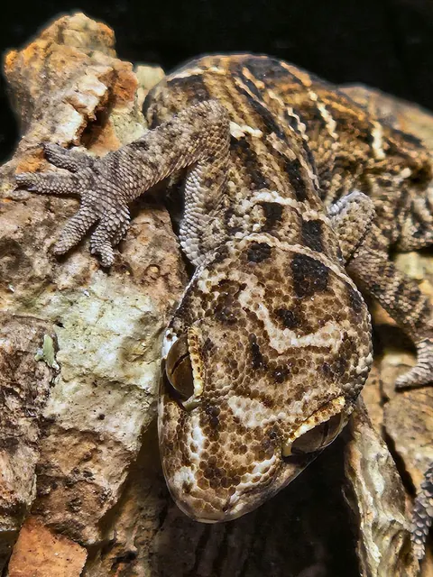

Care Sheet · Husbandry Guide
Viper Gecko
Hemidactylus imbricatus. A compact, strikingly patterned, communal gecko from the arid scrublands of Pakistan and northwestern India. Dry tank, wet micro-zones, and tight crevice hides.

OriginPakistan / India
ActivityNocturnal
SocialCommunal; thrives in groups
DietInsectivore
Tank
- Juvenile group (2–3): 20 × 10 × 12 in.
- Adult group (2–4): 30 × 12 × 12 in.
- Vertical background: full-height cork bark wall packed with cavities and nooks, with moss in the nooks. Open space makes them feel exposed.
- Substrate: bioactive mix with a drainage layer, topped with sand. Keep the area along the back wall exposed for local humidity.
- Avoid: coconut hides, coconut fiber substrate, enclosed plastic hides.
- Groups: one male with several females, or all females. Males can fight.
Lighting
- UVB: low output, Arcadia Shade Dweller or Jungle Dawn (about 5–7%). Helps prevent metabolic bone disease. Replace bulbs every 6–12 months.
- Heat: Zoo Med 35W Nano Halogen on a thermostat with probe.
- Mount lights along the top of the back panel with a wide gradient.
- Give a complete lights-out night cycle.
Temperature
| Zone | Target |
|---|---|
| Hot spot (top of cork) | 90–95°F |
| Mid background | 80°F |
| Cool side | 75°F max |
| Night | 68–72°F; never heat overnight |
Humidity
| Area | Target |
|---|---|
| Tank ambient | 30–40% |
| Cork background | 40–65% |
| Nook interiors | 75–90% |
| Nighttime spike | 60–80% |
Lightly mist the back wall and hide entrances each evening or morning so water wicks into the moss. Sustained high ambient humidity leads to respiratory infection.
Feeders & Diet
- Preferred: dubia and discoid nymphs, crickets (gut-loaded, not the main staple), isopods, silkworms, hornworms, buffalo beetles and larvae.
- Occasional only: small mealworms and small superworms. High fat; can cause impaction if overfed.
- Schedule: 3–4 appropriately sized prey items per gecko every 2–3 days, in the evening after lights out.
- Supplements: calcium (with D3) twice a week and a multivitamin once a week. Rotate calcium with and without D3 if using proper UVB.
Common Issues
| Issue | What to do |
|---|---|
| Retained shed | Mist the background more; add a humid moss hide. Stuck toe shed can cut off circulation. |
| Not eating | New geckos may skip 1–2 weeks. Reduce disturbance, check hot spot, vary feeders. |
| Dropped tail | Regrows with a different look. Keep substrate clean and dry. |
| Group fighting | Add nooks, space, basking areas, and food. |
| MBD | Soft or bowed limbs, tremors. Check UVB, dust feeders. |
| Respiratory | Wheezing, mucus. See a vet; improve ventilation, lower humidity. |
| Egg binding | Bloated or straining female. Emergency: provide deep moist lay site, call a reptile vet. |
Needed Items Checklist
- Tank, 20×10 or 30×12 in; cork bark panel or DIY background
- Substrate: sand, soil, moss & leaf litter
- Escape-proof feeder dish; shallow water dish; feeder tongs
- Cork bark hides, pieces and slabs
- UVB lamp; Zoo Med 35W Nano Halogen; thermostat
- Fine-mist spray bottle; calcium supplement